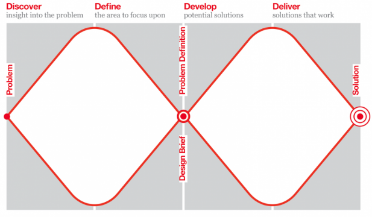

DEFINITION WORKSHOP
Tech for Better
Let's define the problem area.
Where we're at
- You've articulated your goal
- Identified your users
- Done some user research
Today's schedule
- Review your user research
- Redefine the problem
- Define a user journey
- Design some initial solutions
What's next?
- Product Owner Training
- Design sprint & prototyping
- Prototype user testing
- Build sprint
- App user testing
- Final handover
Let's review
Debrief the team
Summarise your project goals and the findings of your user research
Redefine
User Needs
Create a problem statement.
THE USER
needs a way to
DO SOMETHING
(THAT ADDRESSES THEIR NEED)
so that
SOMETHING HAPPENS
(THAT BENEFITS THEM)
How Might We?
Compare, group, pair
Heat map
User Journey
- How might we
- Identify the user
- Identify a single outcome that the user wants to achieve
- Compose a tweet advertising the service (under 140 characters)
An example user journey
- How might we help a traveller save money by finding a shared ride to the airport
- Our user is Rebecca, a price-conscious traveller
- I can post my departure time and connect to other people travelling on the same day
- "Try #TaxiShare to save money on taxis now"
Review
Design
Your app as a messaging service
Script reading
Crazy Eights
The user journey as a mobile map
Heat map
What's next?
- Ensure that your teams have been provided with brand guidelines, color swatches, fonts, logos and copy before design sprint
- Product Owner & Consequence Scanning workshops: Monday September 30th from 10am - 2pm
- User testing of the prototype: Thursday October 3rd (usually between 3:30pm-5:30pm
- In progress testing of the app: October 14-17th
- Final handover: Friday October 18th from 11am - 1pm